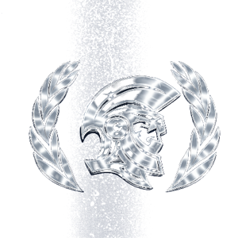

About the Committee & Leadership

Navya Maji
Director
My name is Navya Maji, and I am a Director for the IAEA committee at this year's TFSSMUN iteration. As an IB student here at Turner Fenton, my interest in nuclear energy developed through Civics, where I explored the challenges of maintaining global security tied to non-proliferation and disarmament. This is my second year being involved in Model United Nations, and I am excited to serve as a Director for the first time. Beyond MUN, I enjoy practicing problem-solving through other extracurriculars that I am involved in, including DECA. Outside of school, I like to spend my free time staying active through swimming or playing volleyball, and I enjoy spending time with my friends.

Shaunak Singh
Director
My name is Shaunak Singh, and I am a Director for the IAEA committee at this year's TFSSMUN iteration. My interest in Nuclear Energy stems from back when I was in Grade 5 and when I watched the miniseries Chernobyl; since then, I have been fascinated by the balance between the benefits of nuclear energy and the risks that come with it. I am passionate about finance, business and public speaking, and so I was naturally drawn towards MUN. This is my second year being involved in Model United Nations, and I am excited to serve as a Director. Outside of MUN and school, I spend my time boxing, playing soccer, and watching Manchester City.
Specialized Agency: International Atomic Energy Agency
As nations around the globe push for advancements in their energy production, as well as global security, the world is currently at a critical intersection between technological progress and international stability. Nuclear energy could provide for all of the electricity needs of various countries with little to no greenhouse gas emissions, but it could also be the most powerful and destructive weapon in the world. The International Atomic Energy Agency, an organization which promotes the peaceful uses of nuclear technology, is currently in a precarious position as it attempts to mediate between member states.
States must balance out their own economic and national interests with the security and safety of the world as well as adhere to treaties and laws regarding arms control and proliferation. There is great risk that atomic materials will fall into the wrong hands or be used as leverage by rogue states, thus hindering the spread of peaceful uses of atomic power. Climate change and greenhouse gas emissions have become a great concern, and many states are torn over whether or not to commit to nuclear energy.
Delegates will have to work together to reach a consensus regarding policies, as well as create new ones, to ensure the safety and security of the world in the face of a powerful energy source which could either serve as the world's protector or doom it.